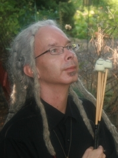
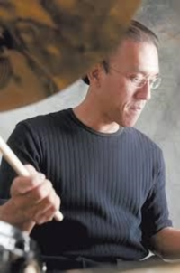

Adjunct Faculty
Mr. Thomas Mackay
 Thomas James Mackay was born in 1967 in Oakland, Nebraska. He started his musical studies at the early age of five in piano and percussion. Mr. Mackay has mentored under Gordon Stout and Bill Molenhof. He studied jazz and classical percussion at The Birch Creek Music Academy, The University of North Dakota, and Casper College. He has performance experience in many genres, from sharing the stage as a mallet percussionist with jazz artists such as Clark Terry, David Valdez, and Rob Schepps, to the psychedelic genre of Martin Fierro (Grateful Dead and Quicksilver Messenger Service), Terry Haggerty (Sons of Champlin), Merle Saunders (Jerry Garcia Band) as well as the world renowned 3 Leg Torso. As a keyboardist and organist Mr. Mackay has performed and recorded with reggae legend and Studio One artist Norma Fraser. He has experience playing many other music styles from big band to piano bar, and funk to singer/songwriter. Mr. Mackay has performed at The Hollywood Bowl, Folklife Festival, Winnepeg Jazz Festival, Medford Jazz Festival and countless other club dates as both a leader and sideman. As an educator Mr. Mackay has been on the Faculty of Western Michigan College and the Medford Jazz Festival's "Education in the Schools" program. He has presented vibraphone and jazz improvisation. He has also presented private and group lessons on drum set and orchestral percussion instruction to various public schools throughout the Midwest and Northwest. In June of 2013 Mr. Mackay released his first CD of The Mackay Project "Jackson", under the Hammondbeat Records label. While recording Jackson, there were two weeks of studio downtime which was used to record yet another session of jazz standards. "Here's That Rainy Day" was released under the Hammondbeat Records label in the Fall of 2013. "The Thomas Mackay Quintet" features tenor sax player Bud Berlingeri, formerly of the Louie Prima band from 1952 to 1954. "Here's That Rainy Day" is a departure from Mr. Mackay's four mallet style and concentrates on the two mallet style of vibraphone greats Milt Jackson and Coleman Hawkins.
Mr. Noel Okimoto
 Born and raised in Honolulu, Noel Okimoto has been playing professionally since the age of ten. Noel's primary instrument is the drum set, but he is also an accomplished orchestral percussionist, vibraphonist, composer and clinician. He received his Bachelor's Degree in Percussion from the University of Hawaii. Noel has played in Hawaii, the mainland USA, and internationally with Freddie Hubbard, The Woody Herman Orchestra, Stan Getz, Bobby Hutcherson, Richie Cole, Bill Watrous, Ernie Watts, Bud Shank, Barney Kessel, Lew Tabackin, Sadao Watanabe, Wynton Marsalis, Ronnie Cuber, Makoto Ozone, Jeff Richman, Larry Coryell, Nestor Torres, Gene Harris, Take 6, David Benoit, Henry Mancini, Nelson Riddle, Steve Allen, Natalie Cole, Kenny Loggins, Michael McDonald, Bob Hope, Rosemary Clooney, Patti Page, Dionne Warwick, and Jake Shimabukuro, among others. He was also a member of the Gabe Baltazar Group for five years. He is also the percussion section leader of the historic Royal Hawaiian Band. Okimoto recorded an award- winning jazz CD in 2004, entitled 'Ohana, that received a 4-Star review in Downbeat magazine and positive reviews in other national and international publications.